Après avoir examiné dans le module 16 les composants les plus courants des installations électriques basse tension, nous allons nous intéresser à des équipements spéciaux, et plus particulièrement à la partie haute tension des réseaux électriques.
Les matériels dont nous allons parler font souvent appel à des technologies élaborées, ils sont parfois fragiles ou dangereux. Seuls des électriciens professionnels confirmés peuvent intervenir sur ces appareils, aussi bien pour les installer, les régler ou en assurer la maintenance.
Notre objectif consiste à comprendre l’utilité de ces équipements, leurs principes de fonctionnement et à les situer dans leur environnement. Nous commencerons par rappeler les différentes tensions usuelles de la distribution électrique et par expliquer la raison de cette cascade de tensions. Nous aborderons ensuite le raccordement de l’usine proprement dit. Le schéma de principe de la liaison avec le réseau d’EDF pourra être examiné lorsque nous aurons décrit les cellules haute tension, qui sont les véritables éléments essentiels dans ce domaine.
Les installations électriques comportent souvent des éléments dont le néophyte ne soupçonne pas l’existence et dont le rôle et les principes de fonctionnement restent mystérieux. Nous tenterons de nous familiariser avec les transformateurs, l’énergie réactive et les batteries de condensateurs, les harmoniques et leur filtrage, les onduleurs.
Enfin, nous ferons un retour rapide sur les problèmes de sécurité des réseaux électriques en examinant les régimes de raccordement du neutre.
Avant d’examiner les différents équipements électriques rencontrés sur les installations haute tension, nous allons expliquer pourquoi la tension passe par des valeurs si différentes, depuis la centrale de production d’EDF (400 000 V) jusqu’à la prise électrique domestique (220 V) ou le relais d’alimentation d’un moteur (24 V).
Le réseau de transport électrique d’EDF véhicule d’énormes quantités d’énergie. La puissance d’une tranche de centrale nucléaire est de 1 300 MW, ce qui correspond à la puissance d’alimentation de 1 300 millions de convecteurs de chauffage électriques de taille moyenne.
Nous avons vu dans le module 16 que la puissance (P) est transportée par les câbles électriques grâce à deux grandeurs physiques : la tension (U) et l’intensité du courant (I). Nous avons alors noté la relation entre puissance, tension et intensité :
\[P = U I \]
La puissance est donc proportionnelle à la tension et à l’intensité du courant, ce qui signifie que, pour transporter une forte puissance, si l’intensité est faible il faudra une forte tension ; inversement, une forte intensité sera nécessaire si la tension est limitée.
Exemple :
Un moteur électrique d’une puissance de 40 kW (soit 40 000 W), alimenté sous une tension de 400 V, consomme une intensité électrique de :
\[I_{1} = 40 000{400} = 100 {A} \]
L’intensité circulant sur le réseau de distribution 20 kV pour ce moteur est :
\[I_{2} = 40 000{20 000} = 2 A\]
Sur le réseau de transport 400 kV, l’intensité nécessaire pour alimenter ce moteur est seulement :
\[I_{3} = 40 000{400 000} = 0,1 A\]
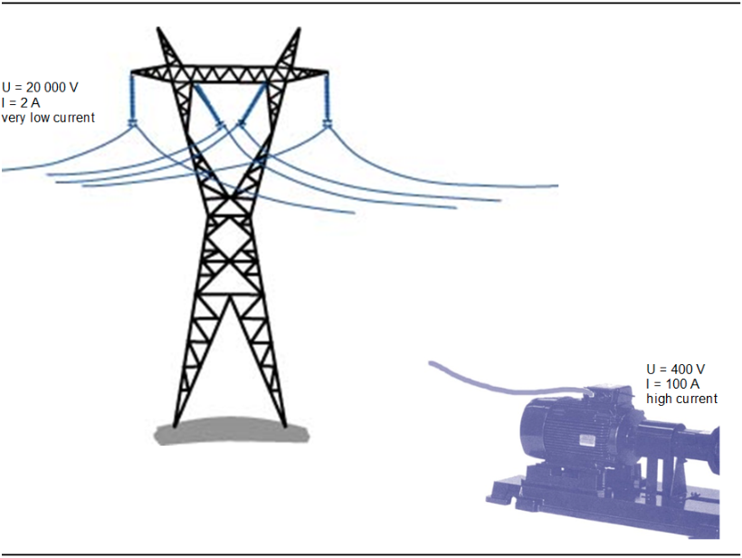
Fig. 1
L’intensité du courant est responsable de l’échauffement des conducteurs qu’il emprunte. Ce phénomène est appelé effet Joule et il s’explique par les frottements qui s’opposent à la circulation des électrons libres au sein du matériau conducteur (voir module 16). Ces frottements produisent de la chaleur, comme des frottements mécaniques.
L’influence de l’intensité du courant sur l’effet Joule est particulièrement importante car l’échauffement est proportionnel au carré de l’intensité. Cela signifie que si l’intensité du courant traversant un conducteur double, l’échauffement dû à l’effet Joule est multiplié par quatre.
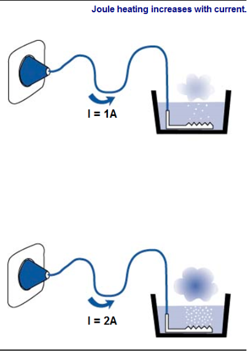
Fig. 2
La forte augmentation de l’échauffement par effet Joule a deux conséquences fâcheuses :
Pour limiter l’intensité du courant électrique distribué, il faut que la tension soit aussi forte que possible. Malheureusement, on ne peut pas augmenter la tension d’un réseau électrique démesurément pour des raisons de sécurité.
Dans le module 16, nous avons évoqué certains risques liés à une tension élevée. Lorsqu’une personne entre en contact avec un objet porté à une certaine tension électrique, la gravité de l’accident potentiel augmente avec cette tension. Le matériel aussi souffre lorsqu’il est exposé à une tension trop élevée. Les risques d’arcs électriques augmentent, les isolants doivent être renforcés pour éviter qu’ils ne « claquent ».
Pour des raisons de sécurité, les installations terminales d’utilisation de l’électricité présentent des tensions relativement faibles. En revanche, pour limiter les pertes d’énergie par échauffement des câbles lors du transport, les tensions sur les différentes parties du réseau EDF sont beaucoup plus élevées.
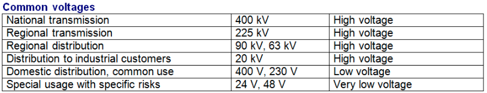
Fig. 3
Les usines d’incinération, comme beaucoup d’installations industrielles, sont généralement raccordées au réseau en 20 kV.
Au début de ce module, nous avons expliqué que pour véhiculer une puissance électrique donnée, il fallait faire circuler un courant dont l’intensité est d’autant plus grande que la tension du réseau est faible.
Les câbles par lesquels l’usine est connectée au réseau de distribution d’EDF doivent supporter des puissances électriques importantes :
Dans les deux cas, si l’usine était raccordée sur le réseau EDF basse tension (le réseau sur lequel sont raccordés les abonnés particuliers), l’intensité dans les câbles de liaison serait excessive. L’usine est donc connectée au réseau EDF « HTA » (tension de 20 kV). Cette tension est très supérieure à la tension de sécurité, c’est-à-dire la tension en dessous de laquelle le contact électrique est peu dangereux pour les personnes (cf. module 16). Il faut donc protéger très soigneusement les équipements sous haute tension pour éviter des accidents qui pourraient être extrêmement graves.
Le matériel de raccordement, et de manière générale tout équipement sous haute tension, est rassemblé dans des locaux spécifiques dont l’accès est réservé et le matériel conçu pour présenter toutes les garanties de sécurité. Il est généralement intégré dans des armoires appelées cellules.
Chaque cellule est prévue pour réaliser une fonction spécifique et contient uniquement le matériel nécessaire pour assurer cette fonction. Les cellules sont conçues pour pouvoir être associées et former des ensembles modulaires.
Selon les particularités de chaque site, le poste de raccordement est constitué de quelques cellules choisies le plus souvent dans un catalogue de cellules standards.
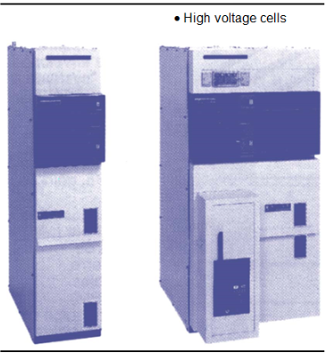
Fig. 4
Les cellules les plus courantesLes fonctions à assurer dans un poste de raccordement sur réseau EDF sont du même type que celles que remplissent les équipements d’alimentation des installations en basse tension, que nous avons étudiés dans le module 16.
Cellule « arrivée » ou « départ »Elle permet soit d’assurer la connexion avec le câble d’alimentation d’EDF (« arrivée »), soit de commander l’alimentation d’un circuit interne à l’usine (« départ »). Cette cellule contient essentiellement un sectionneur (nous avons vu dans le module 16 que cet appareil permet la coupure de l’alimentation d’un circuit avec une bonne fiabilité). À ce sectionneur peut être associé un jeu de fusibles.
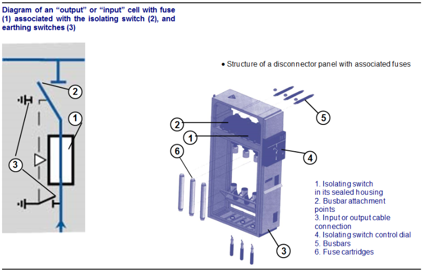
Fig. 5
Cellule de disjoncteurL’appareil de protection de base des installations électriques est le disjoncteur. Dans le module 16, nous avons vu que cet appareil permet de détecter plusieurs types de défauts (courts-circuits, défauts d’isolement, surintensités) et de couper l’alimentation du circuit défectueux. Dans la cellule, un sectionneur est souvent associé au disjoncteur.
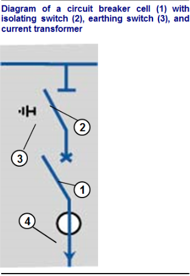
Fig. 6
Autres cellulesOn rencontre également des cellules préfabriquées pour assurer d’autres fonctions, notamment :
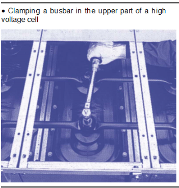
Fig. 7
Les accessoires rencontrés fréquemment dans les cellulesEn plus de l’appareil assurant la fonction principale de la cellule, celle-ci renferme souvent des accessoires permettant de faciliter l’exploitation ou d’améliorer la sécurité du réseau. Ce sont, par exemple :
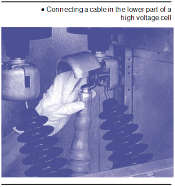
Fig. 8
Les liaisons entre cellulesLes différentes cellules constituant un poste de raccordement sont installées côte à côte et interconnectées par un jeu de barres métalliques (une barre par phase) vissées sur des bornes en partie supérieure de la cellule.
Les câbles de départ vers les circuits alimentés ou d’arrivée en provenance du réseau d’alimentation sont connectés à des bornes en partie basse sur la cellule concernée.
VerrouillageDes dispositifs mécaniques interdisent les fausses manœuvres qui pourraient mettre en péril les personnes ou le matériel lui-même :
Le jeu de barres sous 20 kV des cellules haute tension de l’usine est connecté :
L’ensemble de l’installation comprend plusieurs cellules dont la disposition est illustrée par le schéma suivant :
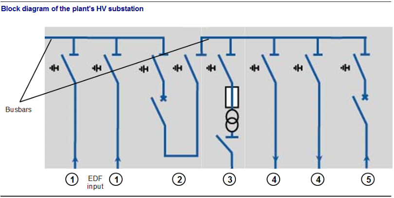
Fig. 9
L’énergie électrique distribuée depuis la centrale de production jusqu’à l’appareil consommateur traverse plusieurs réseaux à des tensions différentes. Pour transférer l’énergie entre ces réseaux, à chaque changement de tension on utilise un transformateur.
Nous allons décrire schématiquement le principe de fonctionnement d’un transformateur, puis indiquer où sont situés les principaux transformateurs dans l’usine et quel est le rôle de chacun.
Le transformateur permet une modification de la tension entre un circuit électrique source, qu’on appelle primaire, et un circuit alimenté, appelé secondaire. Certains transformateurs possèdent plusieurs circuits secondaires séparés.
La modification de la tension fait appel à plusieurs phénomènes physiques, connus sous le nom de lois de l’électromagnétisme.
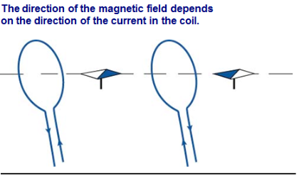
Fig. 10
Les lois de l'électromagnétisme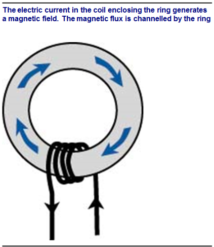
Fig. 11
Création d'un champ magnétique en faisant passer un courant électrique dans le circuitSi on place l’aiguille aimantée d’une boussole à proximité d’un fil électrique en forme de boucle (on appelle cette boucle une spire), et si on fait circuler un courant électrique dans le fil, on constate que l’aiguille aimantée s’oriente d’une manière bien précise. Si on inverse le sens de circulation du courant, le sens d’orientation de l’aiguille s’inverse.
On sait que l’aiguille de la boussole est sensible aux champs magnétiques : on peut en déduire que la circulation du courant dans la spire engendre un champ magnétique.
Circulation du flux magnétiqueDe même que le courant électrique peut être canalisé dans un fil métallique ou qu’un débit d’eau s’écoule dans un tuyau, lorsqu’un champ magnétique prend naissance dans une masse métallique, il est canalisé par ce métal. On dit alors que l’on a une circulation de flux magnétique.
Induction magnétiqueNous venons de voir qu’un circuit magnétique est assimilable à un conduit dans lequel circule un flux magnétique. Si on enroule autour de ce conduit une spire d’un fil métallique (donc conducteur de l’électricité), le flux magnétique traverse la spire. On constate alors un phénomène très important pour le fonctionnement de tous les appareils électriques contenant des bobinages : si le flux magnétique qui traverse la spire varie, alors apparaît dans la spire une force électromotrice variable elle aussi (cf. module 16). Cela signifie que la spire est devenue un générateur d’électricité et qu’à ses bornes on peut mesurer une tension à l’aide d’un voltmètre.
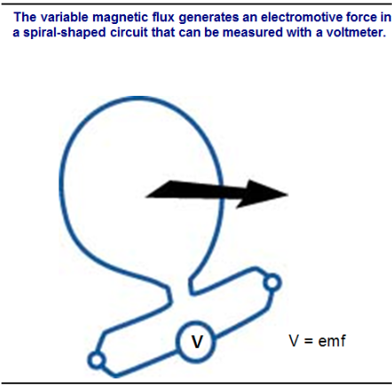
Fig. 12
Fonctionnement du transformateurLe transformateur combine l’ensemble des phénomènes électromagnétiques. Si l’on se réfère au schéma ci-dessous, on peut décrire le mécanisme de la manière suivante :
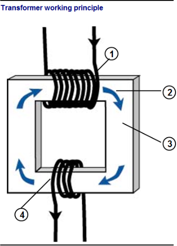
Fig. 13
En résumé, la circulation de courant dans l’enroulement primaire (la source) transforme l’enroulement secondaire en générateur électrique, bien que les deux enroulements ne soient pas directement en contact.
La modification de tension entre circuits électriques primaire et secondaire résulte du nombre de spires de chaque enroulement. La tension est plus forte sur l’enroulement comportant le plus grand nombre de spires. À titre d’exemple, pour un transformateur 20 kV/400 V, le nombre de spires au primaire sous 20 kV est 50 fois plus grand qu’au secondaire sous 400 V (20 000/400 = 50).
Les enroulements sont constitués d’un fil de cuivre ou d’aluminium. Ce fil est isolé sur la totalité de sa longueur par une fine couche de vernis. La section du fil est calculée pour qu’il puisse résister à l’échauffement dû à l’effet Joule lorsque l’intensité du courant est maximale. En cas d’échauffement anormal, le vernis se détériore et des courts-circuits se produisent entre les différentes spires de l’enroulement : le bobinage est « grillé ».
Lorsque l’équipement électrique raccordé au secondaire du transformateur nécessite une alimentation triphasée, le transformateur possède un enroulement triple au primaire (une bobine par phase) ainsi qu’au secondaire. Pour un transformateur monophasé, les enroulements ne comportent qu’une seule bobine chacun.
Circuit magnétiqueLe circuit magnétique est constitué d’un bloc de métal feuilleté. Le feuilletage a pour but de limiter l’échauffement dans le circuit magnétique lorsque le flux circule.
La protection des enroulementsDans les transformateurs dont l’enroulement primaire est soumis à une forte tension (20 kV, par exemple, pour le transformateur de raccordement de l’usine d’incinération sur le réseau EDF), cet enroulement doit être protégé par une enveloppe isolante. Il faut éviter tout risque de mise sous tension accidentelle de l’enveloppe du transformateur ou de l’enroulement secondaire basse tension.
On rencontre deux types de protection :
L’usine est raccordée au réseau EDF 20 kV, l’ensemble des équipements est conçu pour une alimentation en 400 V : un transformateur est donc nécessaire pour adapter la tension. Parfois, on trouve plusieurs transformateurs, chacun alimentant un secteur de l’usine.
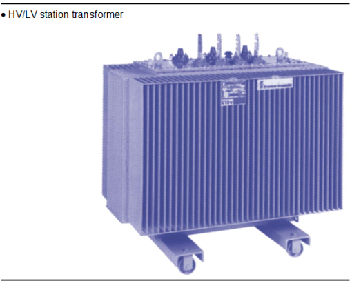
Fig. 14
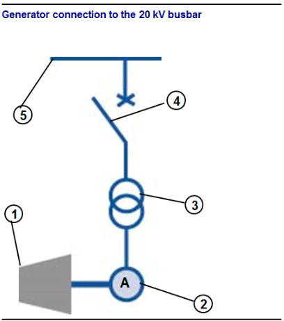
Fig. 15
Transformateur élévateur de turbineLa tension aux bornes de l’alternateur lorsqu’il est en fonctionnement est souvent inférieure à 20 kV. Or, on fait débiter l’alternateur sur le jeu de barres en 20 kV de l’usine pour pouvoir répartir plus facilement la puissance produite sur les différents équipements à alimenter, et exporter sur le réseau EDF le surplus d’énergie produite éventuellement. Il faut donc utiliser un transformateur dont la tension au secondaire est supérieure à la tension au primaire. Cela ne pose aucun problème particulier, car le fonctionnement d’un transformateur est parfaitement réversible et comme on l’a vu plus haut, les tensions de chaque circuit ne dépendent que du nombre de spires de chaque enroulement. À cause de cette particularité, l’appareil est appelé transformateur élévateur.
Le générateur 2, entraîné par la turbine 1, est connecté au jeu de barres 20 kV 5 de l'usine par l'intermédiaire du transformateur élévateur 3 et du disjoncteur de couplage 4.
Transformateurs d'alimentation des circuits de commandeLorsque, dans le module 16, nous avons examiné les équipements électriques basse tension de l’usine, nous avons vu que de nombreux appareils sont commandés par des relais, c’est-à-dire par des contacts actionnés par électroaimant.
Les bobines de ces électroaimants sont généralement alimentées en très basse tension (24 V), ainsi que les systèmes de signalisation (voyants de marche, de défauts…, qui sont disposés en façade des armoires électriques).
Dans pratiquement chacune des armoires électriques réparties sur le site et qui alimentent un équipement particulier, on trouve donc un transformateur au secondaire duquel sont raccordés les circuits de commande (relais) et de signalisation. Ce transformateur est monophasé (un seul bobinage au primaire et un seul au secondaire).
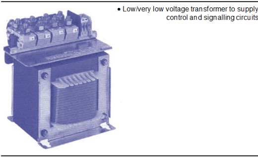
Fig. 16
Les installations électriques industrielles comportent souvent des accessoires que l’on appelle batteries de condensateurs, qui assurent la fonction de compensation d’énergie réactive. Nous allons commencer par examiner ce qu’est l’énergie réactive, puis nous dirons quels sont ses inconvénients ; enfin, nous pourrons voir comment on peut la « compenser ».
Pour expliquer la notion d’énergie réactive, on doit se rappeler que l’électricité du réseau est alternative.
Courant et tension alternatifsCe qui caractérise un courant alternatif, c’est que la circulation du courant électrique change périodiquement de sens. Sur le réseau de distribution d’EDF, dont la fréquence est de 50 hertz, ce changement de sens s’effectue au rythme de 100 fois par seconde (le courant circule 50 fois dans chaque sens par seconde).
En mesurant la tension entre deux câbles du réseau avec un appareil assez rapide, on pourrait noter que la tension change de sens aussi souvent que le courant. N’oublions pas que la tension est assimilable à une pression qui pousserait le courant électrique à circuler dans un sens déterminé. Si le courant change de sens, c’est que la tension fait de même.
Si on pouvait mesurer précisément, et à chaque instant, la tension ou le courant dans un circuit électrique alimenté par le réseau alternatif, on obtiendrait un résultat conforme à la courbe suivante :
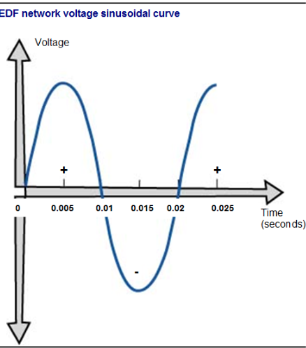
Fig. 17
Au temps 0, la tension est nulle. Pendant 5 millièmes de seconde, elle augmente jusqu’à sa valeur maximale. Puis, pendant 5 millièmes de seconde supplémentaires, elle diminue et s’annule à nouveau. Elle devient alors négative et suit une variation symétrique pendant un centième de seconde.
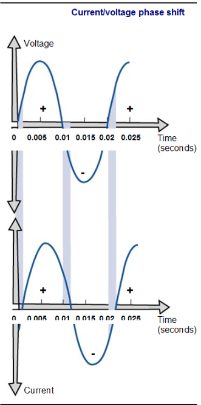
Fig. 18
Le tout a duré 0,02 seconde, soit un cinquantième de seconde (d’où la fréquence de 50 hertz). La variation de la tension se poursuit ainsi indéfiniment. La courbe représentant cette variation est appelée sinusoïde. Pour la visualiser, compte tenu de la rapidité du phénomène, un simple voltmètre ne suffit pas. On doit utiliser un appareil de laboratoire appelé oscilloscope.
Fig. 19
Déphasage entre courant et tension {0.3cm}Supposons maintenant que l’on arrive à mesurer simultanément la tension et l’intensité du courant électrique alimentant un appareil ou un circuit. On observerait deux sinusoïdes de même forme, correspondant à une fréquence de 50 hertz. Pourtant, on pourrait généralement constater un décalage entre les deux courbes : elles ne passeraient pas à zéro au même moment.
L’intensité passe par la valeur 0 un peu plus tard la tension : on dit que le courant est en retard sur la tension.
Le décalage entre la courbe du courant et celle de la tension est appelé déphasage. On l’exprime souvent par le $ $ du circuit :
Sur le graphique qui nous a permis de montrer le déphasage entre courant et tension, on constatait que le courant était en retard sur la tension. Ce cas de figure est le plus fréquent, il correspond à tous les appareils électriques contenant des bobinages, notamment les moteurs. Ces appareils sont appelés inductifs. Dans cette situation où le courant électrique est en retard sur la tension, on dit que l’appareil consomme de l’énergie réactive.
On peut rencontrer le cas inverse où le courant est en avance sur la tension. On dit alors que l’appareil produit de l’énergie réactive. Les circuits de ce type sont ceux qui comportent beaucoup de condensateurs, on les qualifie de capacitifs.
Énergie active et énergie réactiveLorsqu’un appareil est en service, sa consommation, mesurée par le compteur de l’installation, est appelée énergie active. C’est elle qui sera facturée par le distributeur d’électricité. L’unité d’énergie active est le kilowattheure (kWh).
L’énergie réactive traduit un phénomène électrique particulier (avance ou retard du courant par rapport à la tension) qui n’a pas de rapport avec l’indication du compteur. Elle n’est pas facturée directement, mais elle constitue une gêne pour la distribution d’électricité, comme nous allons le voir. L’unité d’énergie réactive est le kilovolt-ampère-réactif-heure (kvarh).
Sur le graphique du déphasage courant-tension, on peut constater qu’à cause de ce déphasage, pendant un cycle complet, il y a alternance de durées au cours desquelles courant et tension sont de même signe (période B : courant et tension sont positifs ; période D : courant et tension sont négatifs), et de durées au cours desquelles ils sont de signe contraire (périodes A, C et E).
Durant les périodes où courant et tension sont de signe contraire, l’appareil restitue de l’énergie au réseau d’alimentation au lieu d’en consommer. Toute l’énergie restituée doit être compensée par un surplus d’alimentation pendant les périodes favorables, où courant et tension sont de même signe : l’intensité du courant nécessaire pour alimenter l’appareil est alors plus élevée.
Le calcul de l’intensité du courant à fournir à l’appareil pour assurer son bon fonctionnement est :
\[I = P{U }\]
Exemple : Prenons un appareil d’une puissance de 1 kW, soit 1 000 W, alimenté en 220 V. Dans un premier temps, supposons qu’il est conçu de telle sorte que le courant qu’il consomme ne soit pas déphasé avec la tension : nous avons vu que ceci correspond au cas où cosinus phi = 1. L’intensité du courant est donc :
\[I_{ 1} = 1000{220 20} = 4,5 A \]
Supposons maintenant que l’appareil présente un léger déphasage, avec un cosinus phi de 0,93 (nous verrons que cette valeur correspond à la limite admise par EDF). L’intensité du courant est alors :
\[I_{2} = 1000{220 0,93} = 4,9 A \] On constate une légère augmentation de l’intensité.
Pour finir, prenons le cas d’un appareil dont le déphasage entre courant et tension est particulièrement prononcé avec un cosinus phi de 0,6. L’intensité du courant est dans ce cas :
\[I_{3} = 1000{220 0,6} = 7,6 A \]
L’intensité est nettement plus élevée que dans les deux cas précédents.
On peut maintenant comprendre le problème pour le distributeur de l’électricité : si ses clients utilisent beaucoup d’appareils dont le courant est très déphasé par rapport à la tension, il lui faudra distribuer un courant beaucoup plus élevé, et ceci sur toute la longueur du réseau, depuis la centrale de production jusqu’aux appareils. Les pertes d’énergie par effet Joule dans les câbles de transport seront fortement accrues. Concrètement, EDF admet les installations où cosinus phi est au moins égal à 0,93. Si cosinus phi est inférieur à cette valeur, le client se voit appliquer des pénalités pour dédommager EDF des pertes qu’elle supporte par effet Joule sur le réseau de transport et de distribution d’électricité.
La grande majorité des appareils électriques connectés au réseau sont de type inductif, c’est-à-dire que le courant qu’ils absorbent est en retard sur la tension. Comme on l’a vu plus haut, on dit qu’ils consomment de l’énergie réactive et nous venons de voir que ceci oblige EDF à distribuer sur tout son réseau des intensités élevées.
Pour limiter l’effet de tous ces déphasages cumulés, il faut brancher à proximité de chaque installation des appareils qui, au contraire, présentent un déphasage inverse (le courant qu’ils absorbent doit être en avance sur la tension). Le courant distribué dans la ligne principale, cumulant l’avance d’un appareil et le retard de l’autre, se trouvera en phase avec la tension et son intensité sera minimale.
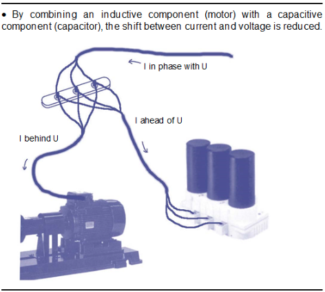
Fig. 20
Les batteries de condensateursLes dispositifs utilisés pour compenser l’énergie réactive sont des condensateurs : ils sont comparables à des accumulateurs d’électricité qui se chargent et se déchargent sur le réseau au rythme de la fréquence électrique, c’est-à-dire 50 fois par seconde. Leur capacité représente la quantité d’électricité qu’ils sont susceptibles de stocker lorsqu’ils se chargent ; elle s’exprime en farads.
Ces appareils produisent de l’énergie réactive (le courant qui les alimente est en avance sur la tension), mais ils ne consomment pratiquement pas d’énergie active, ce qui fait que leur utilisation ne coûte rien à l’industriel.
Les condensateurs ne sont pas choisis au hasard. L’énergie réactive qu’ils produisent doit compenser aussi exactement que possible l’énergie réactive consommée par les équipements de l’usine, pour que le cosinus phi de l’installation électrique dans son ensemble soit aussi proche que possible de la valeur 1. Pour cela on doit déterminer avec précision la capacité des condensateurs à installer, ou bien la quantité d’énergie réactive qu’ils sont capables de fournir.
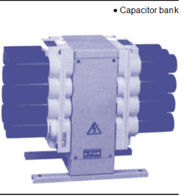
Fig. 21
Les batteries de condensateurs fixesSi les caractéristiques de l’installation électrique sont peu variables, on peut calculer une fois pour toutes la puissance réactive des condensateurs nécessaires et installer la batterie correspondante. Tous les condensateurs restent connectés au réseau en permanence.
Les batteries de condensateurs automatiquesSi les caractéristiques de l’installation sont variables (par exemple, si beaucoup de moteurs fonctionnent de manière discontinue et aléatoire), l’énergie réactive consommée n’est pas constante. Pour la compenser, il faut donc que la production d’énergie réactive par les condensateurs s’adapte en permanence. Les batteries automatiques comportent un dispositif qui connecte ou déconnecte les différents condensateurs en fonction des besoins de production d’énergie réactive à chaque instant.
Dans le chapitre précédent, nous avons présenté la forme de la courbe de variation d’une tension alternative. En réalité, la courbe de variation de la tension d’un réseau électrique est rarement aussi régulière que celle du graphique de la page 16. Très souvent, si on la trace effectivement à l’aide d’un oscilloscope, on obtient un résultat proche du graphique suivant.
L’allure générale de la courbe sinusoïde est conservée, mais elle est modifiée par des petites déformations appelées harmoniques. Ce sont en fait des petites sinusoïdes de fréquence élevée (oscillations courtes) qui se superposent à la courbe de base de fréquence 50 hertz.
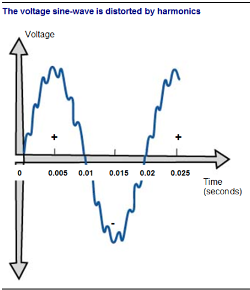
Fig. 22
Les harmoniques apparaissent sur un réseau électrique lorsque des équipements comportant des dispositifs d’électronique de puissance sont connectés. Ce sont, par exemple, les variateurs de vitesse de rotation de moteurs, les onduleurs (voir chapitre suivant), les lampes à décharge, etc.
La présence d’harmoniques sur un réseau de distribution électrique peut entraîner de sérieuses perturbations pour tous les équipements comportant des composants inductifs (bobines) ou capacitifs (condensateurs), car tous ces appareils sont sensibles à la fréquence du réseau. On a vu en effet que les harmoniques correspondent à des tensions de forte fréquence qui se superposent à la fréquence de 50 hertz.
Les principaux inconvénients constatés sont des échauffements anormaux, qui réduisent la durée de vie du matériel, ainsi que des risques de déclenchement intempestif de certains organes de sécurité sur le réseau électrique, qui entraînent des difficultés d’exploitation des installations et des arrêts de production.
Il faut noter aussi que les harmoniques émis par un équipement se propagent sur le réseau en aval et en amont de l’équipement. Les harmoniques dus aux appareils raccordés en basse tension remontent à travers les transformateurs sur la partie haute tension du réseau, et EDF peut être amené à imposer à ses clients des mesures pour limiter les harmoniques lorsque les risques de perturbation de l’ensemble du réseau sont importants.
On dispose de deux techniques pour limiter l’ampleur des harmoniques sur un circuit électrique : les filtres passifs et les filtres actifs.
Filtres passifsCe sont des associations de bobines et de condensateurs, qui laissent passer le courant de fréquence 50 hertz et retiennent les courants de plus grande fréquence. Ces filtres sont calculés au coup par coup pour filtrer des harmoniques de fréquences déterminées, et sont donc adaptés à des problèmes bien particuliers. Si la nature des harmoniques générées par l’équipement électrique change, le filtre peut perdre une bonne partie de son efficacité.
Le résultat du filtrage est représenté sur le graphique suivant : la sinusoïde de variation de la tension est plus régulière après filtrage qu’avant.
Filtres actifsLe principe est très différent : il s’agit de mesurer en permanence les sinusoïdes parasites, et d’injecter sur le réseau un courant identique mais de signe contraire. Cette technologie est bien sûr plus complexe et plus chère, mais elle présente l’avantage de s’adapter à n’importe quelle harmonique, et au cas où les harmoniques générées sont changeantes.
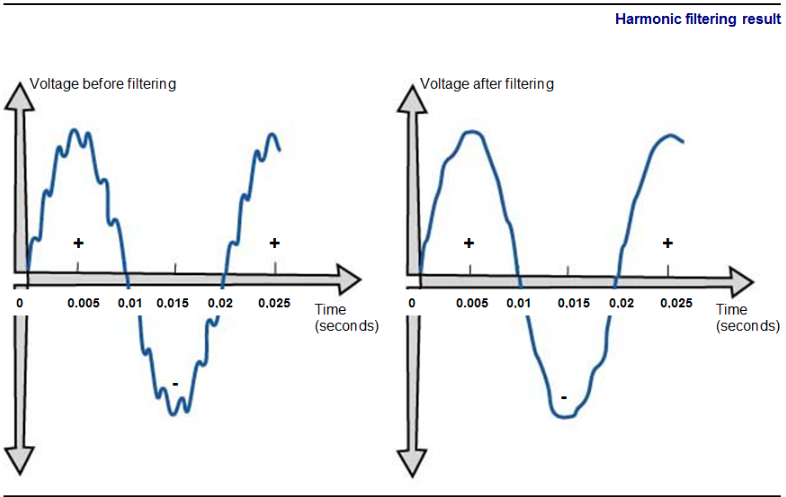
Fig. 23
Dans une installation industrielle, certains équipements stratégiques doivent bénéficier d’une sécurité de fonctionnement absolue. L’alimentation électrique d’un appareil peut se révéler défaillante pour de multiples raisons :
L’onduleur est un appareil qui est alimenté en courant continu, et qui transforme cette énergie en courant alternatif. Il utilise pour cela des dispositifs électroniques. Si la conception de l’onduleur est de bonne qualité, il fournira un courant parfaitement sinusoïdal au circuit alimenté. L’alimentation en courant continu peut être réalisée à partir d’une batterie d’accumulateurs, ou bien par un redresseur connecté sur le réseau électrique de l’usine.
L'appareil est alimenté par connexion au réseau électrique 1. Le redresseur transforme le courant alternatif du réseau en courant continu 2. Ce courant continu alimente l'onduleur 4 et maintient les accumulateurs chargés 3. A la sortie 5 de l'onduleur, nous avons un courant alternatif de bonne qualité sans risque de coupure de courant.
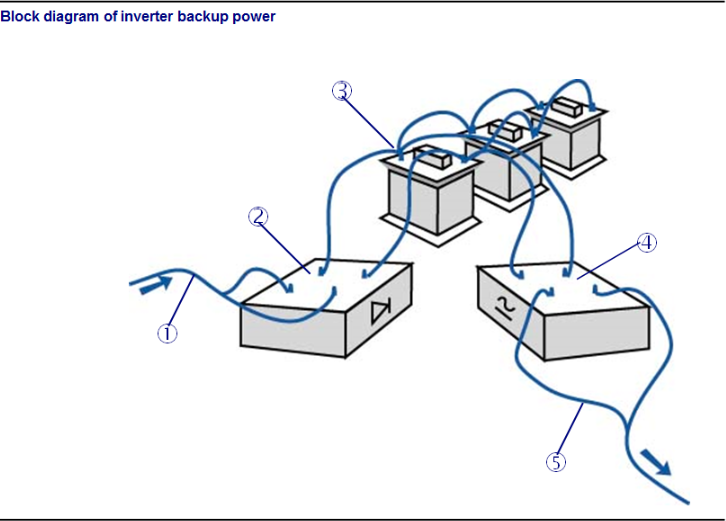
Fig. 24
Le filtrage des harmoniques, dont nous avons parlé au chapitre précédent de ce module, ne permet pas d’obtenir un courant parfaitement sinusoïdal si l’amplitude des harmoniques à éliminer est trop forte.
Certains appareils électroniques nécessitent une qualité de courant telle que l’alimentation directe sur le réseau, même après filtrage des harmoniques, est risquée. Dans ce cas, l’onduleur permet, pour cet appareil précis, d’obtenir une alimentation acceptable. En effet, il n’y a pas de continuité entre le réseau alternatif source, celui qui alimente le redresseur, et le réseau alternatif alimenté par l’onduleur. Les harmoniques ne peuvent pas se transmettre
Paradoxalement, l’onduleur délivre à sa sortie (du côté de l’appareil alimenté en courant « propre ») un courant parfaitement sinusoïdal, mais le redresseur rejette des harmoniques sur le réseau en amont, et contribue ainsi à la nécessité de filtrage sur l’installation.
Alimentation de sécurité sans coupureDe nombreuses installations industrielles comportent des groupes électrogènes de secours pour pallier les problèmes de panne de secteur. Ces groupes démarrent et sont capables d’alimenter correctement les équipements électriques généralement en moins d’une minute après la coupure.
Ce délai est encore beaucoup trop long pour certains équipements qui exigent une continuité d’alimentation absolue, et ne supportent même pas les micro-coupures de quelques fractions de seconde. L’onduleur associé à une batterie d’accumulateurs assure la parfaite continuité d’alimentation requise. Dès la coupure de secteur, l’onduleur continue à être alimenté en courant continu par les accumulateurs et fonctionne donc sans interruption. Les accumulateurs se rechargent automatiquement lors de la reprise de l’alimentation normale, lorsque le redresseur débite à nouveau du courant.
La capacité des accumulateurs est la seule limite du dispositif : si la coupure ne prend pas fin et si le groupe électrogène de secours ne prend pas le relais avant le délai de décharge des accumulateurs, l’onduleur n’est plus alimenté et ne peut plus rien fournir.
Les réseaux électriques comportent souvent cinq fils : trois fils de phase, un fil de neutre, un fil relié à la terre. Les fils de phase servent à distribuer le courant aux appareils connectés au réseau. Ils sont donc toujours sous tension et le contact avec ces fils est extrêmement dangereux.
Dans une installation « équilibrée », les puissances fournies par chaque phase sont identiques. Le courant dans le fil de neutre est alors théoriquement nul. En réalité, il est impossible d’équilibrer parfaitement un réseau électrique, car chacun des appareils monophasés raccordés au réseau n’est connecté qu’à une seule phase. Les courants distribués par chaque phase varient donc de manière aléatoire en fonction des mises en marche et des arrêts des appareils. Le fil de neutre d’un réseau triphasé débite donc généralement un courant, et sa tension n’est pas forcément nulle.
Le fil relié à la terre joue un rôle dans la sécurité du réseau, comme nous allons le voir. Sa tension est nulle et la circulation d’un courant dans ce fil indique la présence d’un défaut d’isolement sur le réseau. Dès qu’un courant est constaté dans le fil de terre, un dispositif de protection coupe l’alimentation du réseau.
Nous savons que l’électricité ne circule que si elle peut emprunter un circuit fermé sur lui-même. Si aucun des câbles d’un réseau électrique n’était connecté à la terre, il n’y aurait aucun danger à entrer en contact avec l’un de ces câbles ou avec un élément du circuit sous tension, à condition bien sûr de ne pas toucher simultanément deux éléments connectés à deux phases différentes, ou entre une phase et le neutre. Cette remarque explique pourquoi les oiseaux peuvent se poser sans dommage sur les fils électriques : tant qu’ils ne touchent qu’un seul fil, la circulation d’un courant électrique à travers leur corps est impossible.
La mise à la terre de certains éléments du réseau de distribution d’EDF répond à une nécessité bien particulière. Le vent provoque, par frottement sur les lignes aériennes du réseau, la production sur ces lignes d’électricité statique. Si cette électricité n’était pas éliminée par une mise à la terre, les lignes seraient portées à des tensions considérables de plusieurs millions de volts, ce qui poserait de sérieux problèmes aux installations raccordées au réseau.
À partir du moment où le réseau de distribution est mis à la terre, il devient dangereux de toucher n’importe quel élément conducteur car la circulation d’un courant devient possible si la personne concernée est elle-même en contact direct ou indirect avec le sol. Il faut donc envisager un système de protection pour rendre inoffensif tout contact même accidentel avec un élément sous tension d’une installation électrique. Il existe plusieurs systèmes appelés régimes de neutre.
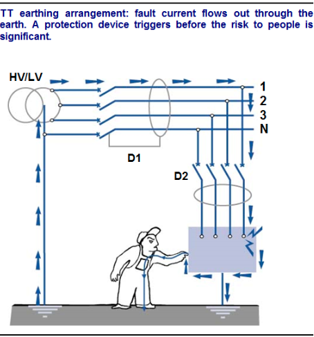
Fig. 25
Ce régime consiste à connecter à la terre le fil de neutre issu du générateur ou du transformateur à l’origine de la distribution, et de relier de même à la terre tous les éléments métalliques susceptibles d’être portés sous tension accidentellement en cas de défaut d’isolement : carcasses d’appareils, châssis, tuyauteries métalliques, etc.
Le schéma ci-contre montre un tel dispositif :
Un défaut d’isolement s’est produit sur la phase 1, qui est entrée en contact avec la carcasse d’un appareil. Un courant de défaut peut circuler à travers les liaisons de terre de l’appareil concerné et du neutre au secondaire du transformateur alimentant ce circuit. Les dispositifs de protection (disjoncteurs) D1 et D2 détectent ce défaut avant qu’il ne devienne dangereux pour les personnes pouvant entrer en contact avec la carcasse sous tension.
On s’arrange en général pour choisir un dispositif D2 plus sensible ou plus rapide que D1, de manière à couper seulement l’alimentation de l’appareil en défaut, et non la totalité de l’installation : ce principe est appelé sélectivité des protections. Le régime de neutre TT (conducteur de neutre à la terre et masses des appareils à la terre) est celui des installations domestiques basse tension.
Dans ce régime, le neutre n’est pas raccordé à la terre, mais il est au contraire isolé. Les masses des appareils sont, elles, reliées à la terre.
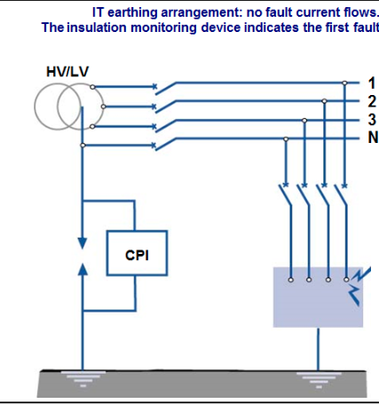
Fig. 26
Le schéma ci-contre illustre ce dispositif :
En cas de défaut d’isolement, la carcasse de l’appareil incriminé est portée à la tension de la phase en défaut, mais aucun courant de fuite ne peut circuler car au niveau du transformateur, le neutre est isolé de la terre. En revanche, le contrôleur permanent d’isolement (CPI) permet de donner l’alerte. En l’absence de défaut, il mesure entre neutre et terre une résistance infinie (pas de circulation de courant possible) ; lorsqu’un défaut survient, la résistance n’est plus infinie car la circulation d’un courant est possible, comme le montre le schéma ci-dessous.
Dès que le défaut est détecté, il doit être éliminé rapidement, car en cas d’apparition d’un second défaut, la sécurité des personnes ne serait plus assurée. En effet, un courant de fuite pourrait circuler en empruntant les liaisons à la terre des différents appareils concernés.
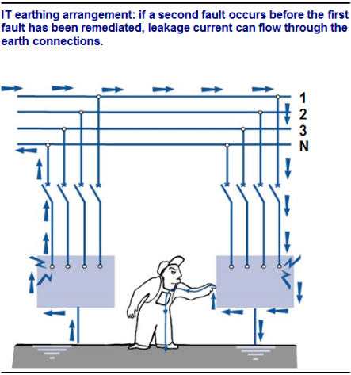
Fig. 27
Le régime de neutre IT (neutre isolé et masses à la terre) est fréquent sur les installations industrielles. Il est intéressant dans la mesure où il permet d’éviter les déclenchements lors d’un défaut, puisque le risque n’apparaît pour les personnes qu’au deuxième défaut simultané. En revanche, tout défaut constaté par le contrôleur permanent d’isolement doit être impérativement éliminé dès sa détection, avant qu’un deuxième défaut ne survienne. Ce régime nécessite une équipe de maintenance électrique performante et rapide.